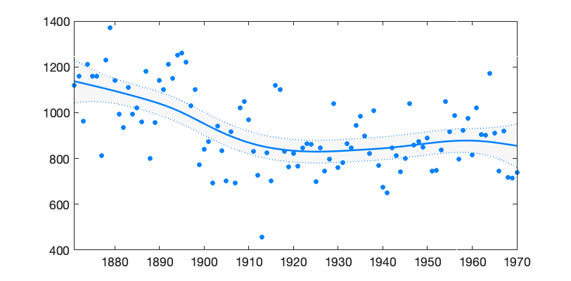
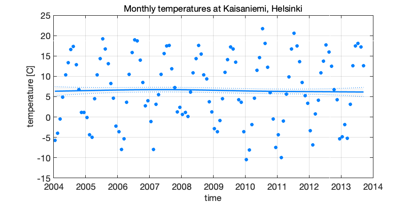
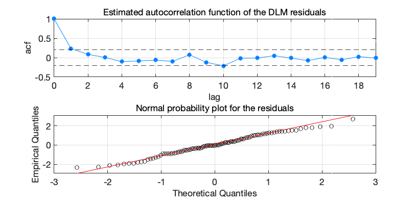
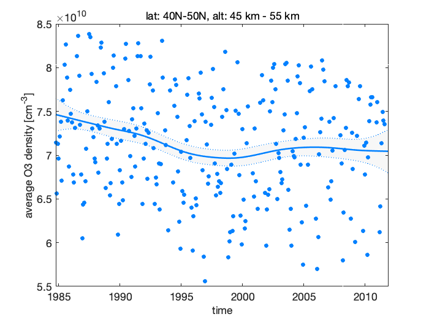
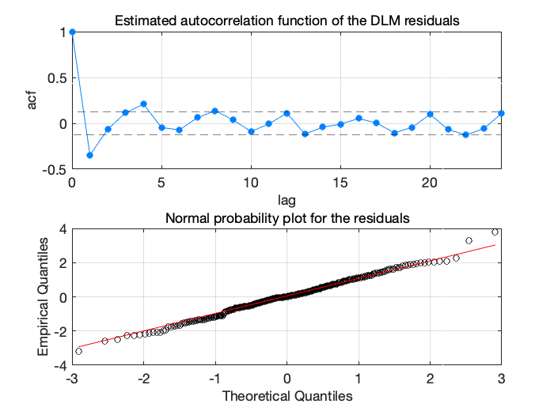
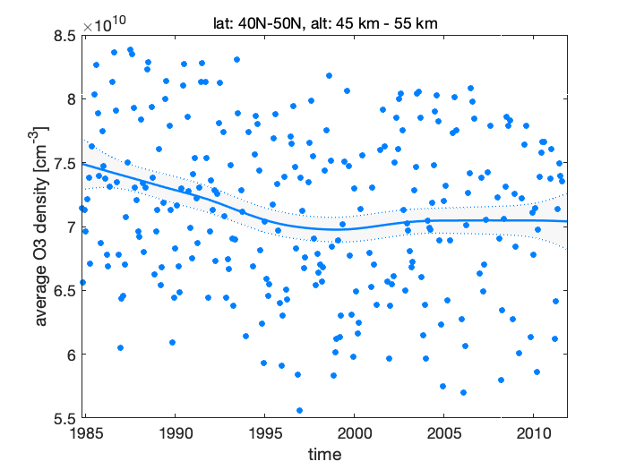
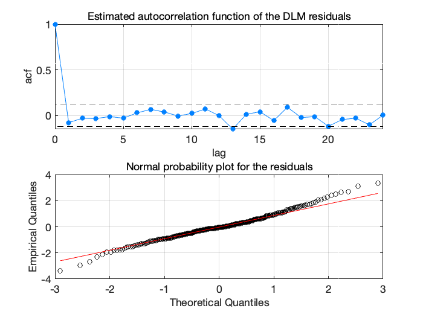
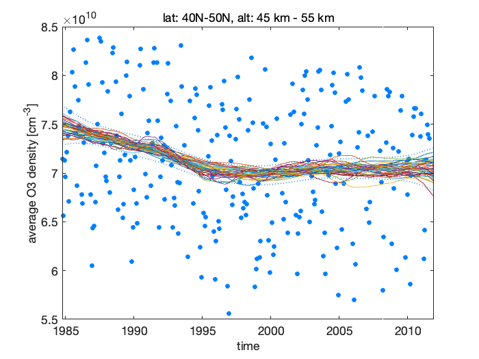
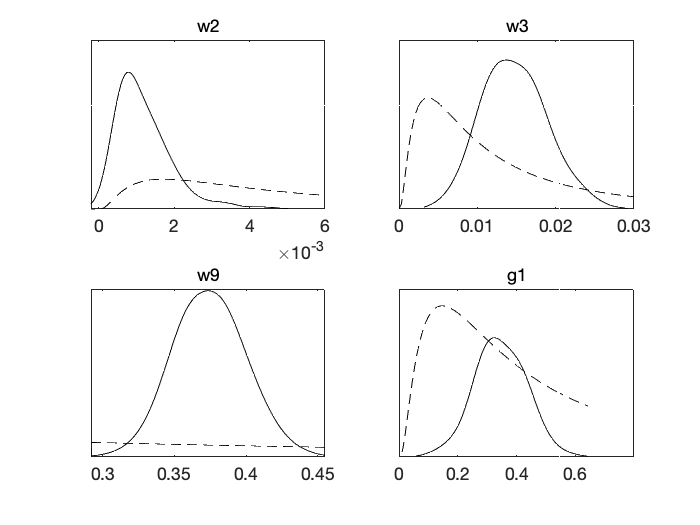
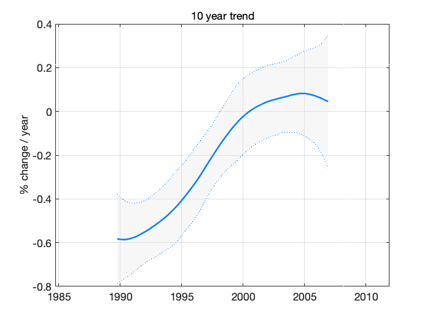

Dynamic linear model tutorial
1 Dynamic linear models
This text gives an introduction to using state space based dynamic regression analysis of time series. We are especially interested in extracting trends in climatic observations. The computer examples are given using my DLM toolbox for Matlab.
1.1 Introduction
Statistical analysis of time series data is usually faced with the fact that we have only one realization of a process whose properties we might not fully understand. In analysis of correlation structures, for example, we need to assume that some distributional properties of the process generating the variability stay unchanged in time. In linear trend analysis, we assume that there is an underlying change in the background that stays approximately constant over time. Dynamic regression with state space approach tries to avoid some of the problems. By explicitly allowing for variability in the regression coefficients we let the system properties change in time. Furthermore, the use of unobservable state variables allows direct modelling of the processes that are driving the observed variability, such as seasonality or external forcing, and we can explicitly allow for some modelling error.
Dynamic regression can, in very general terms, be formulated using state space representation of the of the observations and the state of the system. With a sequential definition of the processes, having conditional dependence only on the previous time step, the classical Kalman filter formulas can be used to estimate the states given the observations. When the operators involved in the definition of the system are linear we have so called dynamic linear model, DLM.
A basic model for many climatic time series consists of four elements: slowly varying background level, seasonal component, external forcing of known processes modelled by proxy variables, and stochastic noise. The noise components might contain an autoregressive correlation structure to account for correlated model residuals. However, autocorrelated errors can be problematic as they might be caused by a long memory of the process as well as by some systematic features not included in the model.
This is a short tutorial on using dynamic linear models in time series analysis. It is based on my attempts to analyse some climatic time series. For that purposes I wrote the Matlab code described here. The examples deal with univariate time series, but the code can handle multivariate data, to some extent. Here we are mostly interested in extracting the components, and using these to infer about some interesting features of the system, but not to produce predictions about the behaviour of the system in the future, although understanding the system is a first step to be able to make predictions.
The use of DLMs in time series analysis is well documented in statistical literature, see the references at the end.
1.2 State space description
General dynamic linear model can be written with a help of observation equation and model equation as
\begin{eqnarray*} \label{dlmDef1} y_{t} &=& F_{t}x_{t}+v_{t},\quad v_{t}\sim N(0,V_{t}), \\ \label{dlmDef2} x_{t} &=& G_{t}x_{t-1}+w_{t},\quad w_{t}\sim N(0,W_{t}). \end{eqnarray*}Above \(y_{t}\) are the \(p\) observations at time \(t\), with \(t=1,\dots,n\). Vector \(x_{t}\) of length \(m\) contains the unobserved states of the system that are assumed to evolve in time according to a linear system operator \(G_{t}\) (a \(m\times m\) matrix). In time series settings \(x_t\) will have elements corresponding to various components of the time series process, like trend, seasonality, etc. We observe a linear combination of the states with noise and matrix \(F_{t}\) (\(p\times m\)) is the observation operator that transforms the model states into observations. Both observation end system equations can have additive Gaussian errors with covariance matrices \(V_{t}\) and \(W_{t}\).
This formulation is quite general and flexible and it allows handling of many time series analysis problems in a single framework. Moreover, an unified computational tool can be used, i.e. a single DLM computer code can be used for various purposes. Below we give examples of different analyses. As we are dealing with linear models, we assume that the operators \(G_{t}\) and \(F_{t}\) are linear, i.e. matrices. However, they can change with the time index \(t\). The state space framework can be extended to non linear model and non Gaussian errors, and to spatial-temporal analyses as well, see, e.g., Cressie.
1.3 DLM as hierarchical statistical model
The DLM formulation can be seen as a special case of a general hierarchical statistical model with three levels: data, process and parameters (see e.g. Cressie). In terms of statistical distributions we have, first, the observations uncertainty \(p(y_{t}|x_{t},\theta)\) described by the observation equation. Second, the process uncertainty of the unknown states \(x_{t}\) and their evolution given by the process equations as \(p(x_{t}|\theta)\), and third, the uncertainty related to model parameters \(p(\theta)\). These conditional formulations allows both efficient description of the system and computational tools to estimate its components. It also combines different statistical approaches, as we can have full prior probabilities for the unknowns (Bayesian approach), estimate them by maximum likelihood and plug them back (frequentistic approach), or even fix the model parameters by expert knowledge (a trivial non statistical approach).
1.4 State and parameter estimation
Recall that \(y_{t}\) are the observations and \(x_{t}\) the hidden system states for \(t=1,\dots,n\). In addition, we have (static) model parameter \(\theta\) that contains auxiliary parameters needed in defining the model and observation errors \(W_{t}\) and \(V_{t}\) and the system matrices \(G_{t}\) and \(F_{t}\). For dynamic linear models we have efficient and well founded computational tools for all the relevant statistical distributions.
- \(p(x_{t+1}|x_{t},y_{1:t},\theta)\) by Kalman filter
- \(p(x_{t}|y_{1:t},\theta)\) by Kalman filter
- \(p(x_t|y_{1:n},\theta)\) by Kalman smoother
- \(p(x_{1:n}|y_{1:n},\theta)\) by simulation smoother
- \(p(y_{1:t}|\theta)\) by Kalman filter likelihood
- \(p(x_{1:n},\theta|y_{1:n})\) by MCMC
- \(p(x_{1:n}|y_{1:n})\) by MCMC
1.5 Recursive Kalman formulas
Here are the relevant parts of the recursive formulas for Kalman filter and smoother to estimate the marginal distributions of DLM states given the observations. We assume that the initial distributions at \(t=1\) are available. First, we perform Kalman filter forward recursion for the predicted states \(p(x_{t+1}|x_{t},y_{1:t},\theta) = N(\hat{x}_{t+1},\hat C_{t+1})\), \(t=1,2,\dots,n-1\)
\begin{align*} v_t &= y_t -F_t\hat{x}_t &\text{prediction error}\\ C^y_t &= F_t\hat C_tF^T + V_t &\text{prediction error covariance}\\ K_t &= G_{t}\hat C_tF^T C_t^{y-1} &\text{Kalman gain}\\ \hat{x}_{t+1} &= G\hat{x}_t + K_tv_t&\text{next state prior mean}\\ \hat C_{t+1} &= G_t\hat C_t(G_t-K_tF_t)^T +W&\text{next state prior covariance} \end{align*}Then, we apply Kalman smoother backward recursion to obtain the smoothed states \(p(x_t|y_{1:n},\theta) = N(\tilde{x}_t,\tilde C_t)\), for \(t=n,n-1,\dots,2,1\)
\begin{align*} L &= G_t - K_tF_t\\ r &= F_t^T C^{y-1}_t v_t + L^T r\\ N &= F_t^T C^{y-1}_t F_t + L^T N L\\ \tilde{x}_t &= \hat{x}_t + \hat C_tr &\text{smoothed state mean}\\ \tilde C_t &= \hat C_t - \hat C_tN\hat C_t &\text{smoothed state covariance} \end{align*}
Both these recursion are implemented in dlmsmo.m Matlab code.
1.6 Simulation smoother
Kalman smoother algorithm provides the marginal distributions \(p(x_{t}|y_{1:n},\theta)\) for each \(t\). These are all Gaussian. However, for studying trends and other dynamic features in the system, we are interested in the joint distribution spanning the whole time range \(p(x_{1:n}|y_{1:n},\theta)\). Note that we are still conditioning on the unknown parameter vector \(\theta\) and will account for it later. This very high dimensional joint distribution is not easily accessible directly. As in many cases, instead of analytic expressions, it is more important to be able to draw realizations from the distribution.
The system equations provide a direct way to recursively produce realizations of both the states \(x_{1:n}\) and the observations \(y_{1:n}\). However, the generated states will be independent of the original observations. It can be shown (Durbin & Koopman, Section 4.9) that the residual process of generated vs. smoothed state is independent of the \(\tilde{x}_{1:n}\) and \(\tilde{y}_{1:n}\). This means that if we add these residuals over the smoothed state \(x_{1:n}\), we get a new realization that is conditional on \(y_{1:n}\), the original observations. So to produce \({x}^*_{1:n} \sim p(x_{1:n}|y_{1:n},\theta)\), we:
- Sample from the system equations to get \(\tilde{x}_{1:n}\) and \(\tilde{y}_{1:n}\).
- Smooth \(\tilde{y}_{1:n}\) to get \(\tilde{\tilde{x}}_{1:n}\).
- Add the residuals to the original smoothed state, \({x}^*_{1:n} = \tilde{x}_{1:n} - \tilde{\tilde{x}}_{1:n} + {x}_{1:n}\).
This simulation smoother will be used in trend studies and as a part of more general simulation algorithm that will sample from the joint posterior distribution \(p(x_{1:n},\theta|y_{1:n})\), and by marginalization argument also from \(p(x_{1:n}|y_{1:n})\) where the uncertainty in \(\theta\) has been integrated out. Simulation smoother is implemented in dlmsmo and dlmsmosam functions. As a note, the simulation smoother can be seen as a special case of the randomize-then-optimize (RTO) method in Bardsley et al. (2104).
1.7 Analysing trends
In general terms, trend is some change in the distributional properties, such as in the mean, of the process generating the observations. We are typically interested in slowly varying changes in the background level, i.e. in the mean process after known sources of variability, such as seasonality, have been accounted for. A common way to explore trends is to fit some kind of a smoother, such as a moving average, over the time series. Many smoothing methods do not provide statistical ways to estimate the smoothness parameters or asses the uncertainty related to the level of smoothing.
In DLM trend analysis, a slowly varying (relative to the time scale we are interested in) background level of the system is modelled as a random walk process with variance parameters that determine the time wise smoothness of the level. These variance parameters must be estimated. In an optimal case, the data provides information also on the smoothness of the trend component, but sometimes we need to use subject level prior information to decide the time scale of the changes we want to extract. DLM models offer means of providing qualitative prior information in the form of the model equations and quantitative information by prior distributions on variance parameters, see (Gamermann).
Let \(x_{\mathrm{level},t}\) be the model state that defines the background level of the process. For statistical analysis, we need to estimate the whole state, as either \(p(x_{1:n}|y_{1:n},\hat{\theta})\), where we plug in some estimates of the auxiliary parameters \(\theta\), (maximum likelihood approach) or by \(p(x_{1:n}|y_{1:n}) = \int p(x_{1:n},\theta|y_{1:n})\,d\theta\) where the uncertainty of auxiliary parameters \(\theta\) are integrated out (Bayesian approach). The latter is typically done by Markov chain Monte Carlo (MCMC) simulation.
1.8 Examples
1.8.1 Spline smoothing
A simple level and trend model can be used as a basis for many trend related studies. In terms of local level \(\mu_{t}\) and local trend \(\alpha_{t}\) it can be written as
\begin{align*} y_t &= \mu_{t} + \epsilon_\mathrm{obs}, &\epsilon_\mathrm{obs}\sim N(0,\sigma^2_\mathrm{obs}), &\text{ observations}\\ \mu_{t} &= \mu_{t-1} + \alpha_{t-1} + \epsilon_\mathrm{level}, & \epsilon_\mathrm{level}\sim N(0,\sigma^2_\mathrm{level}), &\text{ local level}\\ \alpha_{t} &=\alpha_{t-1} +\epsilon_\mathrm{trend}, &\epsilon_\mathrm{trend}\sim N(0,\sigma^2_\mathrm{trend}), &\text{ local trend}, \end{align*}which in state space representation transfers into
\begin{equation*} G=\begin{bmatrix} 1 & 1 \\ 0 & 1 \\ \end{bmatrix},\quad F= \begin{bmatrix}1 & 0 \\\end{bmatrix}, \quad x_t = \begin{bmatrix} \mu_{t}&\alpha_{t}\end{bmatrix}^T, \end{equation*}with three parameters for the error variances
\begin{equation*} \theta = \begin{bmatrix} \sigma^2_\mathrm{obs}&\sigma^2_\mathrm{level} &\sigma^2_\mathrm{trend} \end{bmatrix}^T. \end{equation*}It is interesting to note, that the local level and trend model with \(\sigma^2_\mathrm{level} = 0\) and \(\lambda = \sigma^2_\mathrm{trend}/\sigma^2_\mathrm{obs} > 0\) is equivalent to cubic spline smoothing (Durbin & Koopman, 2012) with smoothing parameter \(\lambda\).
Below, we apply this to classical Nile flow data set used in numerous time series text books. We use Matlab with DLM toolbox.
% Nile flow data y = [1120 1160 963 1210 1160 1160 813 1230 1370 1140 995 935 ... 1110 994 1020 960 1180 799 958 1140 1100 1210 1150 1250 ... 1260 1220 1030 1100 774 840 874 694 940 833 701 916 ... 692 1020 1050 969 831 726 456 824 702 1120 1100 832 764 ... 821 768 845 864 862 698 845 744 796 1040 759 781 865 ... 845 944 984 897 822 1010 771 676 649 846 812 742 801 ... 1040 860 874 848 890 744 749 838 1050 918 986 797 923 ... 975 815 1020 906 901 1170 912 746 919 718 714 740]'; t = (1871:1970)'; % time
options = struct('order',1);
dlmplotfit(dlmfit(y,122,[0 1.65],[],[],[],options),t);
Above we used known observation uncertainty standard deviation (\(\sigma_{\mathrm{obs}}=122\)) and known level and trend variability standard deviations ([0 1.65]). In later examples these values are estimated from the data. The Figure 1 below shows the data together with estimated level component \(\mu_{1:n} = x_{\mathrm{level},1:n}\) and its 95% probability envelope, formed from individual probability limits.

Figure 1: DLM smoother fitted on Nile flow time series
1.8.2 Classical linear regression
Linear regression without dynamical evolution of the regression components is a special case of DLM model, although using DLM code to fit linear regression model is not the most efficient way to achieve this. A non dynamic model is obtained by setting all model error variances to zero. Below, this is done for the Nile example, The 95% probability limits for the level coincides with classical confidence limits of the linear regression.
dlmplotfit(dlmfit(y,122,[0 0],[],[],[],options),t);

Figure 2: Linear trend with DLM
1.8.3 Seasonal component
For DLM time series models, we have two main ways to model seasonality. If ns is the number of seasons, then the full seasonal model has ns-1 components. The number is one smaller than the number of seasons, as the model typically has already a component for the mean level. Model for 4 seasons would be obtained as
[G,F] = dlmgensys(struct('fullseas',1,'ns',4,'order',-1))
G =
-1 -1 -1
1 0 0
0 1 0
F =
1 0 0
Above order=-1 suppresses the default mean level component, so the function returns only the seasonal parts.
An alternative description of seasonality uses trigonometric functions and is achieved by using two model states for each harmonic component. Monthly data with annual and semiannual cycles would be defined by
[G,F] = dlmgensys(struct('trig',2,'ns',12,'order',-1))
G =
0.86603 0.5 0 0
-0.5 0.86603 0 0
0 0 0.5 0.86603
0 0 -0.86603 0.5
F =
1 0 1 0
For illustration we use monthly temperatures at Kaisaniemi, Helsinki. Fit seasonal component with one harmonic function, but allow some variability in the amplitude, with \(\sigma_\mathrm{trend} = 0.005\), \(\sigma_\mathrm{seas} = 0.4\).
load kaisaniemi.mat; % time and temp
options = struct('order',1,'trig',1);
w0 = [0, 0.005, 0.4, 0.4]; % mode error stds
s = 2; % error in the observation operator
dlm = dlmfit(temp,s,w0,[],[],[],options);
dlmplotfit(dlm,time);
grid; datetick;
xlabel('time'); ylabel('temperature [C]')
title('Monthly temperatures at Kaisaniemi, Helsinki')

Figure 3: Seasonal model on Kaisaniemi temperatures 2004-2013
See also the ozone time series example.
1.8.4 Autoregressive process
Autoregressive processes have serial dependence between the observations. For example, AR(3) process is defined by three coefficients \([\rho_{1},\rho_{2},\rho_{3}]\) and an independent innovation term \(\epsilon\) as
\begin{equation*} y_{t} = \rho_{1}y_{t-1} + \rho_{2}y_{t-2} + \rho_{3}y_{t-3} + \epsilon, \qquad \epsilon \sim N(0,\sigma^{2}_\mathrm{eps}) \end{equation*}For including autoregressive component in state space formulation we need to include state variables that "remember" the previous values. This can be achieved by suitable evolution operator \(G\). For example, AR(3) process with coefficients \([\rho_{1},\rho_{2},\rho_{3}]\), has three extra states with
\begin{equation*} G = \begin{bmatrix} \rho_1 & 1 & 0 \\ \rho_2 & 0 & 1 \\ \rho_3 & 0 & 0 \\ \end{bmatrix},\quad F = \begin{bmatrix} 1 & 0 & 0 \\ \end{bmatrix}. \end{equation*}A pure AR(3) process would then be obtained by setting the "observation error" \(\sigma_\mathrm{obs}\) to zero and the first model error component equal to the innovation variance \(\sigma^{2}_\mathrm{eps}\).
In the Matlab toolbox, you can set autoregressive coefficients by using option arphi.
options = struct('arphi',[0.1 0.2 0.3],'order',-1);
[G,F] = dlmgensys(options)
G =
0.1 1 0
0.2 0 1
0.3 0 0
F =
1 0 0
This representation allows the use of DLM code to to fit AR process and estimate its parameters, see below for an example. Note also that the basic AR formulation assumes that the observations are obtained without error. In DLM formulation it is easy to have a model that has both observation error and an AR component.
1.9 Estimating the parameters
In examples above, the variance parameters defining the model error covariance matrix \(W_t\) were assumed to be known. In practice we need some estimation methodology. Basically there are three alternatives. One. Use subject level knowledge with trial and error to fix the parameters without any algorithmic tuning. Two. Use the likelihood function with a numerical optimization routine to find maximum likelihood estimates of the parameters and plug the estimates back to the equations and re-fit the DLM model. Three. Use MCMC to sample from the posterior distribution of the parameters to estimate the parameters or to integrate out their uncertainty.
To estimate the free parameters \(\theta\) in the model formulation we need the marginal likelihood function \(p(y_{1:n}|\theta)\). By the assumed Markov properties of the system, this is obtained sequentially as a by product of the Kalman filter recursion,
\begin{equation*} -2\log(p(y_{1:n}|\theta)) = \mathrm{constant}+ \sum_{t=1}^n\left[(y_t-F_t\hat{x}_{t})^TC_{t}^{y-1}(y_t-F_t\hat{x}_{t}) + \log(|C_{t}^y|)\right]. \end{equation*}On the right hand side, the parameter \(\theta\) will appear in the model predictions \(\hat{x}_{t}\) as they depend on the model formulation, on the matrix \(G_t\), as well as on the model error \(W_t\). For the same reason we need the determinant of the model prediction covariance matrix \(C_{t}^y\). A good thing is that the above likelihood can be calculated along the DLM filter and smoother recursions without much extra effort.
The dlmfit Matlab function has code for both maximum likelihood and MCMC calculations of parameters in the diagonal of the model error matrix \(W\), autoregressive coefficients in \(G\), as well as for estimating one extra multiplicative factor for the observation error matrix \(V\). Other parameter estimation tasks can be programmed, with the help of the likelihood returned by the dlmsmo function, also. See the AR example below.
1.9.1 Nile data again.
Next, we use the Nile data and estimate the smoothness parameter \(\sigma_\mathrm{trend}\). By default the code displays the optimization iterations performed by fminsearch. The option winds contains the indexes of the diagonal of \(W\) that are to be optimized. For example, you can set winds = [0 1 2 2 2 2] to have one parameter for the second element and one common parameter for the elements 3 to 6. The input and output for the optimizer will be in square root scale, i.e. as standard deviations, but the optimization is performed over logarithms of those to ensure positivity of the results.
options = struct('order',1,'opt',1,'winds',[0 1]);
dlm = dlmfit(y,122,[0 1.65],[],[],[],options);
Iteration Func-count min f(x) Procedure
0 1 1102.4
1 2 1102.4 initial simplex
2 4 1102.39 expand
3 6 1102.39 contract inside
4 8 1102.39 contract inside
5 10 1102.39 contract inside
6 12 1102.39 contract inside
7 14 1102.39 contract inside
8 16 1102.39 contract inside
9 18 1102.39 contract inside
10 20 1102.39 contract inside
11 22 1102.39 contract inside
Optimization terminated:
the current x satisfies the termination criteria using OPTIONS.TolX of 1.000000e-04
and F(X) satisfies the convergence criteria using OPTIONS.TolFun of 1.000000e-04
wopt =
1.579
sqrt(diag(dlm.W))'
ans =
0 1.579
1.9.2 AR parameters
In this example we use Kalman filter likelihood to fit parameters in the process evolution matrix \(G\). Take the residuals from the last DLM run and fit AR(1) model. For numerical stability you have to set some small non zero observation variance (this might change in the next version). This functionality in now build into dlmfit, also. The same idea can be used to estimate any parameter in model definition using the Kalman filter likelihood.
Below, the messy looking cost function ofun takes all the elements of previous DLM fit stored in variable dlm except matrix G for which the first column is replaced with given phi. Then it runs dlmsmo for DLM calculations and returns the -2log(likelihood), which is minimized with respect to phi using fminsearch.
y = dlm.resid2; % data are residual from the previous fit
phi = 0.3; % initial guess for AR parameter
opts = struct('order',-1,'seas',0,'arphi',phi);
dlm = dlmfit(y,0.00001,[1],[],[],[],opts); % initial DLM fit
% define object function for minimizing the -2*log(likelihood)
ofun = @(phi)getfield(dlmsmo(dlm.y,dlm.F,dlm.V,dlm.x0,assifun(dlm.G,phi,1:size(dlm.G,1),1),dlm.W,dlm.C0,dlm.XX,0),'lik');
phiopt = fminsearch(ofun,phi)
phiopt =
0.62045
2 Toolbox functions
2.1 Function dlmsmo
out = dlmsmo(y,F,V,x0,G,W,C0,X, sample);
The main workhorse for the DLM calculations. Given the definition of DLM model as input, return Kalman filter and Kalman smoother estimates of the states, an optional sample from the state and observations, and statistics related to the fit.
Input:
y |
Observations, \(n\times p\) matrix |
F |
Observation operator, \(p\times m-q\) matrix |
V |
Observation error, \(n\times p\) matrix of standard deviations |
x0 |
initial value for the state, vector of length \(m\) |
G |
Model operator, \(m-q \times m-q\) |
W |
Model error covariance, \(m \times m\) |
C0 |
Uncertainty of x0, \(m \times m\) |
X |
Optional matrix of regression covariates, \(n\times q\) |
sample |
1 if also a sample from the state is needed |
Above \(m\) is the dimension of the state vector, \(n\) is the number of observation times, \(p\) is the dimension of the observation at each time and \(q\) is the number of regression covariates in the model.
If covariates are given in matrix X, the observation operator and the model operator are appended with suitable entries for X, hence their input dimensions are of size \(m-q\). However, the initial values x0 and C0 and model error covariance matrix W should already contain the elements corresponding to columns of X. An empty X as input means no covariates.
Output is a structure that contains the element below, and many more (to be added).
x |
smoothed state, \(m\times n\) |
xstd |
std of x, \(n\times m\) |
xf |
predicted states |
lik |
-2log(likelihood) |
The function dlmsmo is called by dlmfit that contains code for constructing the system matrices and estimating for some of the model parameters. The ploting functions described below can be used to plot the model output.
2.2 Function dlmfit
out = dlmfit(y,s,w,x0,C0,X,options);
The function dlmfit uses dlmsmo to fit univariate DLM time series model to observations. It generated the suitable model structure according to options given. Optionally it performs optimization or MCMC sampling analysis for parameters in the diagonal of model error matrix \(W\).
The inputs are as the following.
y- The observations to be fitted.
s- The observation uncertainties as standard deviations, scalar or matrix of same size as
y. w- Square roots in the diagonal of the model error matrix \(W\), up to the last non zero element.
x0- The initial values for the model states, if not given, the code tries to use some reasonable first guess (typically 0).
C0- Covariance matrix for the initial model state uncertainty. Defaults to some large values in the diagonal.
X- Covariate proxy time series. Defaults to empty matrix
[]. options- System matrix generation and optimization options as a structure.
This function uses dlmgensys to generate the system matrices. So, all the options defined for it can be used. In addition, the options structure can have the following options related to the estimation of variance parameters
opt |
if 1, perform optimization |
mcmc |
if 1, do mcmc sampling in the parameters |
nsimu |
number of mcmc simulations |
winds |
indexes in diag(W) to be estimated |
fitv |
if 1, estimate observation error, also |
As an output the function returns the result of dlmsmo after optional estimation of model parameters. Even if no iterative optimization is performed, the function dlmsmo is run at least twice to iterate the initial values x0 and C0. Also, some additional elements are added to the output structure. (These are to be documented later, see the example and source.)
Currently, the optimization and MCMC simulation can both have target from the diagonal of the model error matrix \(W\) and one scale parameter for the observation error \(V\). For some models, there are predefined optimization targets. In general you should use winds to define which indexes in diag(\(W\)) are to be estimated by maximum likelihood or sampled by MCMC.
To use winds, you need to know the order of the model components in \(W\): trend, seasonal, AR parameters, covariates. For example if the model has trend of order 1, and two harmonic seasonal components (trig=2) then having one parameter for the local trend variability and one common parameter for the seasonal variability would be achieved by setting options.winds = [0 1 2 2 2 2].
If you need to estimate something else than the diagonal of \(W\), then you can build the target function by using the lik output from dlmsmo. See the AR example.
2.3 Function dlmgensys
[G,F] = dlmgensys(options);
This function generates system evolution matrix and corresponding observation operator matrix for several common dynamic linear models used in time series analyses. The input variable options is a structure having elements that define the components. The following elements are possible at the moment:
order |
order of polynomial trend |
ns |
number of seasons |
fullseas |
if 1, use full seasonal model |
trig |
number of harmonic components |
arphi |
AR coefficients |
Example
[G,F] = dlmgensys(struct('order',1,'fullseas',1,'ns',4))
G =
1 1 0 0 0
0 1 0 0 0
0 0 -1 -1 -1
0 0 1 0 0
0 0 0 1 0
F =
1 0 1 0 0
2.4 Function dlmsmosam
sample = dlmsmosam(dlm,nsam);
Sample of states from DLM fit. Input: dlm fit object, nsam number of samples to draw. Output: matrix of size nstate*ntime*nsam. Uses the simulation smoother, i.e. samples from joint distribution of states at all times given the full set of observations.
2.5 Plotting functions
dlmplotfit(dlm, time, yscale, yind);
Plots the observations with the estimated level component of the model.
Input: dlm is output from dlmfit, time is optional x axis for the plots, yscale optional scaling factor for y, and yind the column of y to be plotted.
dlmplotdiag(dlm);
dlmplotdiag(dlm);
Plot residual diagnostics of DLM fit performed by dlmsmo or dlmfit.

Figure 4: Nile flow time series residual diagnostics
dlmplotmcmc(dlm);
Plot the MCMC chain used in estimation of model parameter in function dlmfit.
3 Ozone trend analysis
To illustrate the DLM toolbox, we analyse univariate time series with local level and trend, seasonality and some proxy time series as regressors. The observations are remote sensing satellite data for stratospheric ozone. This example reproduces some of the calculations for article: M. Laine, N. Latva-Pukkila and E. Kyrölä: Analyzing time-varying trends in stratospheric ozone time series using state the space approach, Atmospheric Chemistry and Physics 14(18), 2014, doi: 10.5194/acp-14-9707-2014.
The model can be written as
\begin{equation} y_t = \mu_t + \gamma_t + \beta_{1,t} X_{1,t} + \beta_{2,t} X_{2,t} + \beta_{3,t} X_{3,t} + \epsilon_t \end{equation}Where \(\mu_{t}\) is the signal level, \(\gamma_{t}\) is the seasonal component, and \(\beta_{i,t}\) and \(X_{i,t}\) are regression coefficients and values of the proxy time series.
The DLM matrices involved here are
\begin{equation*} x_t = \begin{bmatrix} \mu_t & \alpha_t & \psi_{t,1} & \psi^*_{t,1} & \psi_{t,2} & \psi^*_{t,2} &\beta_1& \beta_2 &\beta_3 \end{bmatrix}^T, \end{equation*} \begin{equation*} G = \begin{bmatrix} 1 & 1 & 0 & 0 & 0 & 0& 0 & 0& 0 \\ 0 & 1 & 0 & 0 & 0 & 0& 0 & 0& 0 \\ 0 & 0 &\cos\left(\frac\pi6\right)&\sin\left(\frac\pi6\right)&0&0&0&0&0\\ 0 & 0 &-\sin\left(\frac\pi6\right)&\cos\left(\frac\pi6\right)&0&0&0&0&0\\ 0 & 0 &0&0&\cos\left(\frac\pi3\right)&\sin\left(\frac\pi3\right)&0&0&0\\ 0 & 0 &0&0&-\sin\left(\frac\pi3\right)&\cos\left(\frac\pi3\right)&0&0&0\\ 0 & 0 & 0 & 0 &0 & 0 & 1 & 0 & 0\\ 0 & 0 & 0 & 0 &0 & 0 & 0 & 1 & 0\\ 0 & 0 & 0 & 0 &0 & 0 & 0 & 0 & 1\\ \end{bmatrix}, \end{equation*} \begin{equation*} F_t = \begin{bmatrix} 1 & 0 & 1 & 0 & 1 & 0& \mathrm{solar}(t) &\mathrm{qbo1}(t)&\mathrm{qbo2}(t) \\ \end{bmatrix}, \end{equation*} \begin{equation*} \theta = \begin{bmatrix} \sigma^2_\mathrm{level} &\sigma^2_\mathrm{trend}&\sigma^2_\mathrm{seas} \end{bmatrix}^T. \end{equation*}
In the toolbox you define the model as options=struct('trig',2,'order',1);. The elements defining the proxy variable are added by dlmfit.
Function dlmgensys can be used to construct the matrices \(G\) and \(F\) if needed.
options = struct('trig',2,'order',1);
[G, F] = dlmgensys(options)
G =
1 1 0 0 0 0
0 1 0 0 0 0
0 0 0.86603 0.5 0 0
0 0 -0.5 0.86603 0 0
0 0 0 0 0.5 0.86603
0 0 0 0 -0.86603 0.5
F =
1 0 1 0 1 0
First load the example data set. It consists of stratospheric ozone observations from two satellite instruments SAGE II and GOMOS. The original satellite observations has been combined and processed to produce averaged zonal data for different altitudes. Here we use monthly averages between 45 km to 55 km and 40°N to 50°N for years 1984 to 2012. The data set given here is for demonstration purposes only.
load ozonedata.mat time = data(:,1); % time in years from 1984 to 2012 y = data(:,2); % ozone density [1/cm^3] s = data(:,3); % uncertainty standard deviation for y X = data(:,4:6); % proxies
We scale \(y\) for numerical stability.
ys = stdnan(y); yy = y./ys; ss = s./ys;
Specify prior means for some components of \(W\), the model error matrix. The w0 variable below has the square roots of the diagonal of \(W\) and it is given as an argument to dlmfit.
ym = meannan(yy); % mean observations wtrend = abs(ym)*0.005/12; % trend std wseas = 0.01; % seasonal component std w0 = [0 wtrend wseas wseas wseas wseas];
Calculate the DLM smoother solution and do MCMC simulation over some components in the matrix \(W\). As we are doing MCMC analysis we need to specify Bayesian prior distributions for the unknown parameters. Now we have two of them, the trend standard deviation \(\sigma_\mathrm{trend}\) and the seasonal standard deviation \(\sigma_\mathrm{seas}\). By default, the estimation is done in logarithmic scale with Gaussian priors, i.e. log-normal priors on the original scale. The prior means were already given above. Prior log-normal scale parameter is given with option varcv below. Value 1 means prior standard deviation that is approximately 100% on the original scale of the parameter.
options = struct('trig',2,'mcmc',1,'nsimu',2000);
options.winds = [0 1 2 2 2 2];
options.varcv = [1 1];
dlm = dlmfit(yy,ss,w0,[],[],X,options);
Sampling these parameters:
name start [min,max] N(mu,s^2)
w2: -5.36761 [-Inf,Inf] N(-5.36761,1^2)
w3: -4.60517 [-Inf,Inf] N(-4.60517,1^2)
woptv =
1x0 empty double row vector
woptw =
0.0011264 0.22004
woptg =
1x0 empty double row vector
Next, plot the fitted observations and the level component.
dlmplotfit(dlm, time, ys)
title(label);xlabel('time');ylabel('average O3 density [cm^{-3}]')

Figure 5: Stratospheric ozone trends
Some model diagnostic from the prediction residuals are plotted by dlmplotdiag.
dlmplotdiag(dlm, time, ys)

Figure 6: Stratospheric ozone trends diagnostics
The residuals do not look optimal, there is some cyclic behaviour that might be caused by non-modelled seasonal term. We try again with 3 harmonics instead of two.
options = struct('trig',3,'mcmc',1,'nsimu',2000);
options.winds = [0 1 2 2 2 2 2 2];
options.varcv = [1 1];
w0 = [0 wtrend wseas wseas wseas wseas wseas wseas];
dlm = dlmfit(yy,ss,w0,[],[],X,options);
Sampling these parameters:
name start [min,max] N(mu,s^2)
w2: -5.36761 [-Inf,Inf] N(-5.36761,1^2)
w3: -4.60517 [-Inf,Inf] N(-4.60517,1^2)
woptv =
1x0 empty double row vector
woptw =
0.0042701 0.096897
woptg =
1x0 empty double row vector
Still not happy with the result. Next thing to try is to use an autoregressive component. This usually can explain some non-modelled feature, on the cost of possibly explaining some unknown systematic effects with correlated noise.
The next version has 3 harmonics and an AR(1) component. We need some extra options for this, arphi has the initial value for autoregressive coefficient, fitar tells to try to estimate this value, also, and gcv has the relative prior standard deviation (the log-normal scale parameter).
options = struct('trig',3,'mcmc',1,'nsimu',2000);
options.arphi = 0.4;
options.winds = [0 1 2 2 2 2 2 2 3];
options.varcv = [1 1 1];
options.fitar = 1;
options.gcv = [1];
war = 0.4;
w0 = [0 wtrend wseas wseas wseas wseas wseas wseas war];
dlm = dlmfit(yy,ss,w0,[],[],X,options);
Sampling these parameters:
name start [min,max] N(mu,s^2)
w2: -5.36761 [-Inf,Inf] N(-5.36761,1^2)
w3: -4.60517 [-Inf,Inf] N(-4.60517,1^2)
w9: -0.916291 [-Inf,Inf] N(-0.916291,1^2)
g1: 0.4 [0,1] N(0.4,1^2)
woptv =
1x0 empty double row vector
woptw =
0.00099304 0.013988 0.37175
woptg =
0.34958
Plot the fit and the residual diagnostics.
figure(1); clf
dlmplotfit(dlm, time, ys)
title(label);xlabel('time');ylabel('average O3 density [cm^{-3}]')
figure(2); clf
dlmplotdiag(dlm, time, ys)

Figure 7: Stratospheric ozone trends

Figure 8: Stratospheric ozone trends diagnostics
Expect for one relatively negative autocorrelation at lag 13, the results look satisfactory. Next, for trend analysis, we produce sample from the model states using dlmsmosam. It accounts the posterior uncertainty in \(W\) and in \(G\) using the MCMC chain in dlm.chain.
Also, to illustrate, we draw dome sample realizations of the level component over the fit plot.
nsam = 200; % number of sampled to draw from the posterior dlm_sample = dlmsmosam(dlm,nsam); figure(1) hold on for i=1:5:nsam plot(time,ys*squeeze(dlm_sample(1,:,i)),'-') end hold off

Figure 9: Simulated samples of the level component
Next, Figure 10 shows prior and posterior probability distributions for the unknown parameters, three from the diagonal of model error matrix \(W\) and one on \(G\) for autoregressive coefficient. The estimated posterior distributions look relatively well identified with respect to the priors, which mean that there is some information about the values of the parameters in the observations.
mcmcplot(dlm.chain,[],dlm.res,'denspanel',2);

Figure 10: Parameter prior and posterior from MCMC chain
Next, we sample trend statistics form the DLM sample. Calculate 10 year (+-5) running trend for each model state sample in dlm_sample, collect the results and plot 95% probability region of our uncertainty about the decadal trend.
nyear = 10; tsamp = ys*squeeze(dlm_sample(1,:,:)); % sample of levels ysm = mean(tsamp(:)); % their mean ysf = 1/(ysm*nyear)*100; % scale factor to get % change / 10 year t10 = mean((tsamp(nyear*12+1:end,:)-tsamp(1:end-nyear*12,:))')*ysf; % mean trend s10 = std((tsamp(nyear*12+1:end,:)-tsamp(1:end-nyear*12,:))')*ysf; % std in the sample time10 = time(fix(nyear/2)*12+1:end); time10 = time10(1:length(t10)); % time axis for plot
confband(time10,t10,s10);grid;
xlim([time(1),time(end)]); % match axis to other plots
title('10 year trend');
ylabel('% change / year')

Figure 11: Ten year trend in ozone
As also seen from the fit plot with the observations and the estimated level, the negative trend has started to increase toward positive somewhere after the year 1995, this increase has leveled out around 2000 and the current trend is slightly positive, but not necessarily in statistical significant way, i.e. zero or negative slope (although larger than in the beginning of the period) would also be consistent with the observations and with our model.
4 References
- A.C. Harvey.
Forecasting, structural time series and the Kalman filter. Cambridge University Press, 1990.
- T.J. Durbin and S.J. Koopman.
Time Series Analysis by State Space Methods. Oxford University Press, second edition, 2012.
- G. Petris, S. Petrone, and P. Campagnoli.
Dynamic Linear Models with R. Springer, 2009.
- S. Särkkä.
Bayesian Filtering and Smoothing. Cambridge University Press, 2013.
- D. Gamerman.
Markov chain Monte Carlo – Stochastic simulation for Bayesian inference. Chapman & Hall, second edition, 2006.
- N. Cressie and C.K. Wikle.
Statistics for Spatio-Temporal Data. Wiley, 2011.